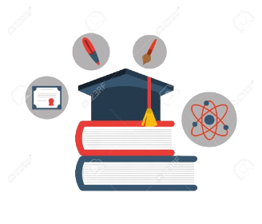

Formacion Academica
Durante mi etapa de educación primaria, tuve la oportunidad de estudiar en el Centro de Educación Básica Santo Domingo Savio. Durante esos años, desde el primer grado hasta el noveno grado, adquirí una base sólida en diferentes áreas de conocimiento, lo cual sentó las bases para mi desarrollo académico posterior.
Luego de culminar mi educación primaria, ingresé al Centro de Educación Media Gubernamental Álvaro Contreras. Actualmente, me encuentro cursando el tercer año de la carrera de informática en este centro educativo. Durante este tiempo, he tenido la oportunidad de profundizar mis conocimientos en el campo de la informática, aprendiendo sobre programación, sistemas operativos, redes, entre otros aspectos fundamentales de esta disciplina.
Esta experiencia educativa ha sido crucial para mi crecimiento personal y profesional, ya que me ha permitido adquirir habilidades y conocimientos que son fundamentales en el mundo actual, cada vez más orientado hacia la tecnología y la informática. Estoy comprometido con mi formación académica y con seguir aprendiendo para alcanzar mis metas y contribuir de manera positiva al desarrollo de la sociedad.
Experiencia
he tenido diversas experiencias en trabajos como la soldadura, la electrisidad y herreria, actualmente me ha ayudado mucho mis experiencias laborales como por ejemplo mis conocimientos sobre la electrisidad me han facilitado en gran parte algunas areas de la carrera.
Tener experiencias laborales previas en soldadura, electricidad y herrería ha sido una verdadera ventaja para mí en mi carrera actual. En particular, mis conocimientos en electricidad han sido de gran utilidad en diversas áreas de mi campo de estudio, la informática. Por ejemplo, entender los principios fundamentales de la electricidad me ha permitido comprender mejor el funcionamiento de los dispositivos electrónicos y sistemas informáticos, lo cual es esencial para diseñar, desarrollar y mantener soluciones tecnológicas eficientes y seguras.
Habilidades

Dentro de mis habilidades de la carrera considero que una de las principales hasta el momento es el area de redes, pero tambien manejo bien las demas areas de la carrera.
Pero cuento con habilidades en otras areas, una de las principales es la quimica, siento que es una de mis habilidades mas importantes ya que es lo que mas me gusta y es a lo que me quiero dedicar, quiero dedicarme a trabajar en el area de la quimica, posiblemente como ingeniero quimico.